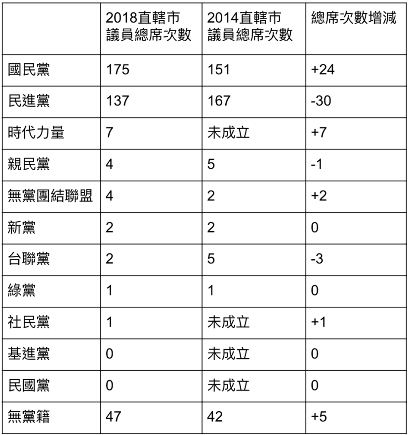

請點選地圖中的點
請點選地圖中的點
網站問題反應
說明
注意事項：
此次地方選舉，在大環境對民進黨不利、對國民黨有利的態勢下，許多初試啼聲的年輕議員候選人更都順利當選。
在大環境及母雞帶小雞的加乘效應下，直轄市議員確實成長了 61 萬 2680 票，增加了 24 席；但在縣市議員的部分卻呈現截然不同的情況，不僅總得票數減少 10 萬 576 票，更掉了 16 席，其中不乏現任議員。
但在新媒體時代，年輕世代候選人崛起，議題文宣的能見度大增，吸引中間、年輕，甚至傳統陣營選民的目光，並削弱了傳統型議員的得票，稍不小心就可能落選。
資料取自
中選會選舉資料庫網站

設定
回到目前位置